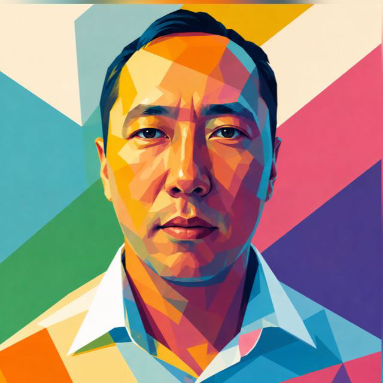

говорим
Обмениваемся вопросами, наблюдениями и честными сомнениями.
minders astana / о нас
minders: это сообщество в Астане, где AI становится поводом встретиться, поговорить и что-то сделать вместе.
кто мы
Встречаемся в кофейнях, гуляем, разбираем модели, спорим о продуктах и помогаем друг другу доводить идеи до прототипа.
Обмениваемся вопросами, наблюдениями и честными сомнениями.
Проверяем идеи руками и оставляем место для неожиданных поворотов.
Смотрим, как AI меняет продукты, язык, работу и жизнь вокруг нас.
кто за этим

основатель / minders astanaоснователь
Қанат Базаралы - основатель minders astana и Bolzhau Tech. MBA и Fulbright Scholar с бэкграундом в информационных системах. Исследует, как AI может лучше понимать контекст и помогать людям делать сложные вещи понятнее.
До minders он много работал с сообществами и публичными выступлениями: был президентом Astana Toastmasters, провёл более 40 выступлений, запустил казахоязычный speaking club и помогал развивать клубы в Казахстане.
LinkedInminders растёт из разговоров, любопытства и совместной работы.
со-основатель
сооснователь minders astana
Методолог и исследователь AI. Помогает бизнесу разбираться с технологиями через рабочие процессы, автоматизацию и обучение.
minders astana
Люди. Идеи. Технологии.
наш telegram